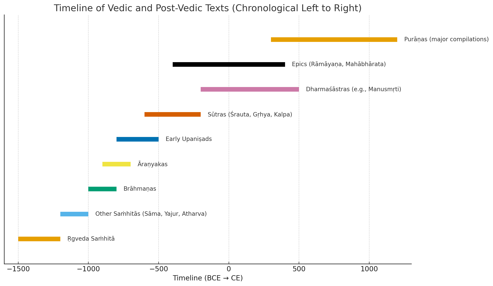

📜 Definition of Vedic and Post-Vedic Texts
The Vedic texts (Śruti) are the oldest and most sacred Hindu scriptures, believed to be divinely
revealed. They include the four Vedas — Ṛgveda, Sāmaveda, Yajurveda, and Atharvaveda — along with their
Saṁhitās, Brāhmaṇas, Āraṇyakas, and Upaniṣads. These texts focus on hymns, rituals, philosophy, and
guidance for
sacrifices, promoting spiritual knowledge, ethical living, and societal harmony, generally without
gender bias. Post-Vedic texts (Smṛti and Purāṇas), on the other hand, are human-authored works that
interpret and apply Vedic teachings. They include law codes (like Manusmṛti), epics (Mahābhārata,
Rāmāyaṇa), and Purāṇas (Vishnu, Padma, Garuḍa, etc.), offering guidance on law, social norms, rituals,
and mythology. These later texts are more context-specific and often show a patriarchal tilt, especially
in matters like inheritance, ritual duties, and gender roles.
-
Core Vedas (Śruti)
- Period: c. 1500 – 1000 BCE (Rigveda earliest hymns), up to c. 800 BCE (Upaniṣads).
- Includes:
- Saṁhitā (hymn collections)
- Brāhmaṇa (ritual explanation texts)
- Āraṇyaka (forest texts, meditative rituals)
- Upaniṣad (philosophy, knowledge of Brahman)
- Status: Śruti (divine revelation, eternal sound).
- View on girls: Birth of daughters not condemned; women sages exist; sons preferred for
ritual continuity, but daughters also blessed.
-
Gṛhya Sūtras (Kalpa-sūtra literature)
- Period: c. 600 – 200 BCE.
- Nature: Later ritual manuals based on Vedic mantras.
- Focus: Household rituals — marriage, birth ceremonies, funerals, ancestor offerings
(śrāddha).
- Status: Not śruti; considered auxiliary texts (Vedāṅga Kalpa).
- View on girls: Start of stronger emphasis that eldest son performs funeral rites.
-
Dharmaśāstras (e.g., Manusmṛti, Yājñavalkya-smṛti)
- Period: c. 200 BCE – 500 CE.
- Nature: Law and ethics codes.
- Focus: Duties (dharma), caste rules, inheritance, conduct, gender norms.
- Status: Smṛti (remembered, humanly composed).
- View on girls: Strong son-preference. Sons seen as necessary for ancestor rites; daughters
treated as “given away” (kanyādāna).
-
Smṛti Literature in General
- Period: c. 500 BCE – 1200 CE (ongoing expansions even later).
- Includes: Epics (Mahābhārata, Rāmāyaṇa), Purāṇas, Dharmaśāstras, Nīti-texts.
- Status: Smṛti (respected but below Veda).
- Social Practices:
- Only son performing śrāddha becomes norm.
- Daughter seen as Lakṣmī (auspicious), but socially “parāya dhan” (someone else's
wealth).
- Purāṇas glorify divine feminine (Devi), but everyday custom became patriarchal.
